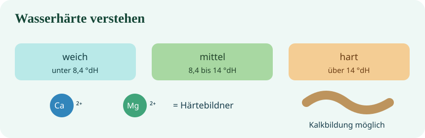

Werkzeugträger
Ca²⁺/Mg²⁺, Härtebereiche und typische Anzeichen
Härtebereiche · Umrechnen · technische Entscheidungen
Ablauf: 3 Min. digital informieren → 2 Min. gemeinsam sichern → mindestens 2 von 4 Lernpostkarten bearbeiten (insgesamt 10 Min.) → Lösungen besprechen → Praxisaufgabe → Selbsttest → Abschluss. Fragen und Antworten stehen bei den jeweiligen Schritten. Die Postkarten werden separat ausgeteilt.
Wähle die nächste Phase: Mit „Phase starten“ springst du zur Aufgabe, und die Zeit läuft sichtbar oben rechts weiter. Bei 00:00 hält sie an.

AUFTRAG · Lies die Erklärung, teste die Härteskala und notiere drei Schlüsselbegriffe. Anschließend folgt eine kurze gemeinsame Sicherung.
Wasserhärte beschreibt hauptsächlich die Konzentration gelöster Calcium- und Magnesiumionen. In Deutschland wird sie häufig in Grad deutscher Härte (°dH) angegeben.
Härtebereiche nach Wasch- und Reinigungsmittelgesetz:
weich: unter 8,4 °dHmittel: 8,4–14 °dHhart: über 14 °dH
Hinweis: Der Härtebereich ist eine Einteilung für Waschmitteldosierungen, kein Urteil über die Trinkwasserqualität.
Fragen an die Klasse: Welche zwei Ionen bestimmen die Härte? Was bedeuten weich, mittel und hart? Ist hartes Wasser automatisch ungesund?
Haltet die Antworten knapp fest. Danach geht es zu den vier Lernpostkarten.
PFLICHTAUFTRAG · Bearbeite mindestens ZWEI der vier ausgeteilten Wasserhärte-Lernpostkarten. Plane etwa 4–5 Minuten pro Karte und nutze verbleibende Zeit für weitere Aufgaben. Du darfst dir die Schwierigkeit selbst aussuchen.
Beginne mit einer passenden Karte und wähle als zweite nach Möglichkeit die nächsthöhere Stufe. Kreuze jeweils vorher an, wie sicher du bist; beantworte die vier Aufgaben deiner Karte und schätze dich nachher erneut ein.
Ca²⁺/Mg²⁺, Härtebereiche und typische Anzeichen
Verkalkung, Warmwasser, Carbonathärte und Messung
Kundenfall mit 16 °dH, Härtearten und pH-Überleitung
Warum bei gleicher Härte unterschiedlich viel Kalk entstehen kann
Wichtig: Die vier Fragen stehen auf der jeweiligen Postkarte. Die Kacheln hier sind nur die Übersicht über die Schwierigkeitsgrade, nicht die eigentlichen Aufgaben.
0 von mindestens 2 Karten markiert.
Falls du nur eine Karte schaffst, notiere, welche Frage dich aufgehalten hat. Die zweite Karte bleibt dein nächstes Lernziel.
Vergleicht zunächst Antworten aus Karte 1 und 2. Fragt danach: Warum bedeutet 15 °dH nicht, dass überall gleich viel Kalk entsteht?
Klärt schwierige Begriffe aus den Karten: Carbonathärte / Nichtcarbonathärte, die Messung der Gesamthärte und den Einfluss der Betriebsbedingungen. Nutzt eure Karte zum Korrigieren.
Die Gesamthärte hängt vor allem von Calcium und Magnesium ab. Kalkablagerungen hängen zusätzlich unter anderem von Temperatur, Wasserzusammensetzung und Kalk-Kohlensäure-Gleichgewicht ab. Carbonathärte bezeichnet den Anteil der Härte, der der Alkalinität (vereinfacht dem Hydrogencarbonatanteil) zugeordnet wird; Nichtcarbonathärte ist der übrige Anteil. Für genaue Messungen kommt im SHK-Alltag zum Beispiel eine geeignete Härte-Titration infrage.
TRANSFER · Formuliere eine technische Begründung; vergleiche sie im anschließenden Kompetenzcheck.
Technischer Auftrag: Ein Gebäude meldet zunehmend Kalkablagerungen an Warmwasserarmaturen. Gemessen werden 19 °dH.
Welche Maßnahmen bzw. Prüfungen sind fachlich sinnvoll? Wähle alle zutreffenden Aussagen.
Beim Erwärmen kann sich das Kalk-Kohlensäure-Gleichgewicht verschieben; Calciumcarbonat kann ausfallen. Auch Temperatur, Zusammensetzung und Betrieb spielen eine Rolle.
Beantworte die Aufgaben ohne nachzuschlagen. Du erhältst nach der Auswertung zu jeder Antwort eine Erklärung.
Blitzlicht: Nenne eine neue Erkenntnis, eine noch offene Frage und die Postkarte, an der du als Nächstes weiterarbeiten möchtest.
Die Lehrkraft sammelt zwei bis drei Aussagen und leitet zur nächsten Unterrichtseinheit pH-Wert über.
Wenn du vor der Zeit fertig bist: Rechne 15 °dH mit dem Faktor 0,1783 in mmol/L um. Ergebnis: ungefähr 2,67 mmol/L. Notiere, was diese Einheit beschreibt.
Diese freiwillige Zusatzaufgabe gehört nicht zur Pflichtzeit für die zwei Postkarten.
Wiederhole offene Fragen, indem du die Simulation erneut durchspielst. Die Inhalte bleiben als digitales Nachschlagewerk verfügbar.
Kalkflecken, ein zugesetzter Duschkopf oder Ablagerungen im Warmwasserbereiter sind typische Praxisanlässe. Ziel ist, Ursachen der Wasserhärte, Härtebereiche und geeignete Maßnahmen zu verstehen.
Calcium- und Magnesiumionen bestimmen die Wasserhärte. Es gelten die Härtebereiche weich (unter 8,4 °dH), mittel (8,4 bis 14 °dH) und hart (über 14 °dH).
Gesamthärte = Carbonathärte + Nichtcarbonathärte. Carbonathärte wird auch vorübergehende Härte genannt.
Praxisauftrag: Beim Kunden zeigen sich Ablagerungen im Rohr und geringer Wasserdurchfluss. Welche Ursachen kommen infrage und wie würdest du die Wasserhärte bestimmen?
In mebis öffnen (Anmeldung möglicherweise nötig)
In mebis öffnen (Anmeldung möglicherweise nötig)
In mebis öffnen (Anmeldung möglicherweise nötig)
In mebis öffnen (Anmeldung möglicherweise nötig)
In mebis öffnen (Anmeldung möglicherweise nötig)
In mebis öffnen (Anmeldung möglicherweise nötig)
Quelle: mebis / ByCS – bereitgestellter Wasserhärte-Kursraum.